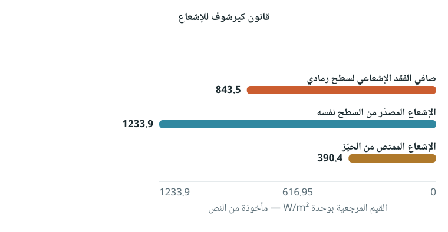

قانون كيرشوف للإشعاع
Kirchhoff's Radiation Law
عند التوازن الحراري تتساوى امتصاصية السطح وانبعاثيته عند الطول الموجي نفسه: ε_λ = α_λ، ومنها ε = α للسطح الرمادي؛ أي أن ما يمتصّه السطح جيدًا يشعه جيدًا.
قانون كيرشوف للإشعاع ينص أن الامتصاصية والانبعاثية لأي سطح متساويتان عند الطول الموجي نفسه وفي الحرارة نفسها، فالصيغة الطيفية ε_λ = α_λ، وتُختصر إلى ε = α للسطح الرمادي الذي لا تتغيّر خواصه على الطيف. وأساسه موازنة التفصيل عند التوازن الحراري: لو امتصّ سطح طولًا موجيًّا أكثر مما يشعه لارتفعت حرارته تلقائيًّا فوق حرارة المحيط، وهو ما يخالف القانون الثاني. ولهذا تُطلى أسطح امتصاص الألواح الشمسية بالأسود المات الذي يمتلك α عالية في الطيف الشمسي، وتُطلى أسطح العزل الحراري بمواد ذات ε منخفضة في الأشعة تحت الحمراء، ولا يُنقض القانون بينهما لأنهما يعملان في نطاقين مختلفين من الطول الموجي. ومثال محسوب: سطح رمادي ε = 0.85 عند 400 K داخل حيّز عند 300 K يفقد 843.5 W/m².
كيف تعمل الظاهرة؟
التوازن الحراري توازن تفصيلي: في كل نطاق طول موجي يجب أن يتساوى ما يُمتص بما يُشعّ، وإلا تراكمت الطاقة في النطاق وارتفعت حرارة السطح أو انخفضت من تلقاء نفسها. وآلية الامتصاص والإصدار واحدة فيزيائيًّا: اهتزازات الشحنات في المادة تُبدّد الإشعاع الساقط حرارةً، وهي نفسها تُصدر إشعاعًا بحسب حرارة المادة؛ فما يقدر على استقبال الطاقة بهذه الآلية يقدر على بثّها بها. ولهذا تنخفض الانبعاثية في المعادن المصقولة: حرّية الإلكترونات تعكس الإشعاع قبل أن يُمتص، ويصحب ذلك انبعاثية منخفضة.
العلاقة بالأرقام
σ = 5.670 374 419×10⁻⁸ W·m⁻²·K⁻⁴. ولمنظومة صغيرة داخل حيّز كبير: q = ε·σ·(T⁴ − T₀⁴)، وفحص البعد: ε بلا وحدة × W·m⁻²·K⁻⁴ × K⁴ = W/m². وبالأرقام عند ε = 0.85 وT = 400 K وT₀ = 300 K: T⁴ = 2.56×10¹⁰ K⁴ وT₀⁴ = 8.1×10⁹ K⁴، والفرق 1.75×10¹⁰ K⁴، وσ × الفرق = 5.670 374 419×10⁻⁸ × 1.75×10¹⁰ = 992.3 W/m²، ثم × 0.85 = 843.5 W/m². وبالتفصيل نفسه: المُصدَر 0.85 × 5.670 374 419×10⁻⁸ × 2.56×10¹⁰ = 1233.9 W/m²، والمُمتص 0.85 × 5.670 374 419×10⁻⁸ × 8.1×10⁹ = 390.4 W/m²، والفرق 843.5 W/m² وهو المقدار نفسه، وهذا التوافق هو صورة القانون عدديًّا.
مفاهيم متقاربة
أول خلط أن يُقرأ القانون كأنه يقول «الأجسام السوداء تمتص أكثر»، وهو لا يقول ذلك بل يقول إن الامتصاصية والانبعاثية متساويتان للجسم نفسه. والثاني أن يُطبَّق على نطاق طيفي واحد ويُعمَّم على الطيف كله، وهذا بالضبط ما يفعله الطلاء الانتقائي: α عالية عند 0.5 µm وε منخفضة عند 10 µm، ولا تناقض. والثالث أن يُظنّ أن انخفاض ε يعني أن السطح لا يمتص حرارة بالإشعاع، والصحيح أن ε المنخفضة تُبطئ التبادل في الاتجاهين معًا، ولهذا تُستعمل في جدران الترمس لا في مجمّعات الشمس.
حدود التطبيق
يسقط القانون صريحًا خارج التوازن الحراري المحلي، كما في إصدار الليزر والفلورة واللمعان المُثار، حيث لا يعبّر الإشعاع الخارج عن حرارة المادة. ولا يكفي في الأوساط الشفافة أو نصف الشفافة حيث τ ≠ 0، فيلزم حلّ حجمي بمعامل امتصاص موزّع لا معامل سطحي واحد. وتنكسر الرمادية في الأسطح المهيكلة والنانونية التي تُصمَّم لتفريق الامتصاص عن الإصدار طيفيًّا. ولا يُستعمل في حساب التبادل بين سطحين متقاربين بلا معاملات تبادل تُصحّح للهندسة، لأن الصيغة أعلاه تفترض منظومة صغيرة في حيّز كبير. وأخيرًا تفقد الانبعاثية معناها عند الأطوال الموجية المقاربة لثابت الشبكة أو في الغازات الذرية ذات الخطوط الضيقة.

| الكمية | القيمة | المصدر |
|---|---|---|
| ثابت ستيفان–بولتزمان | 5.670 374 419×10⁻⁸ W·m⁻²·K⁻⁴ | [2] |
| صافي الفقد الإشعاعي لسطح رمادي | 843.5 W/m² | [2] |
| الإشعاع المصدَر من السطح نفسه | 1233.9 W/m² | [2] |
| الإشعاع الممتص من الحيّز | 390.4 W/m² | [1] |
المصادر
- 1 Engineering Heat Transfer, 3rd ed. (W. S. Janna) — CRC Press / Taylor & Francis (2009). · اطُّلع عليه 2026-11-21
- 2 CODATA Value: Stefan–Boltzmann constant — NIST — CODATA recommended values of the fundamental physical constants (2024). physics.nist.gov/cgi-bin/cuu/Value?sigma · اطُّلع عليه 2026-11-26
استشهد بهذا المصطلح
الصيغتان مبنيتان من بيانات الصفحة نفسها: العنوان والتاريخ ورابط النسخة المنشورة.
قانون كيرشوف للإشعاع — Kirchhoff's Radiation Law. (2026). ديوان المعرفة — انفراد. https://infiradev.com/diwan/terms/term-kirchhoff-law.html
@misc{term-kirchhoff-law2026,
title = {قانون كيرشوف للإشعاع},
titleaddon = {Kirchhoff's Radiation Law},
howpublished = {{ديوان المعرفة — انفراد} — مرجع علمي عربي},
year = {2026},
url = {https://infiradev.com/diwan/terms/term-kirchhoff-law.html},
urldate = {2026-11-26},
note = {مراجعة علمية: hermes — مراجعة آلية بالتكليف 2026-11-26}
}
راجعه: hermes — مراجعة آلية بالتكليف 2026-11-26 · 2026-11-26 · آخر تحديث 2026-11-26